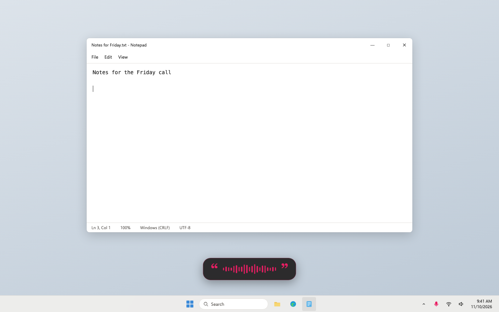
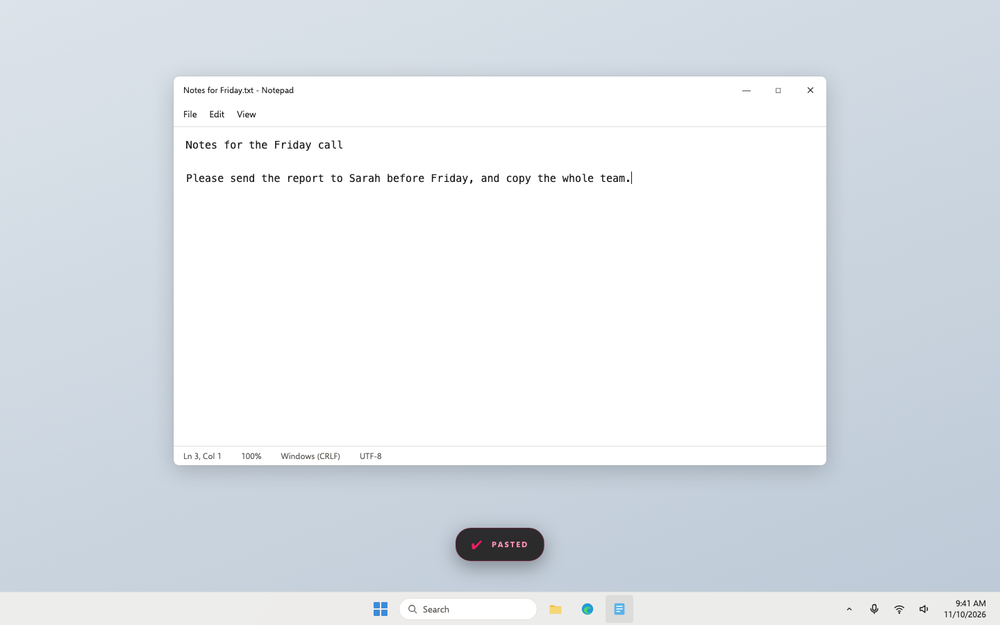
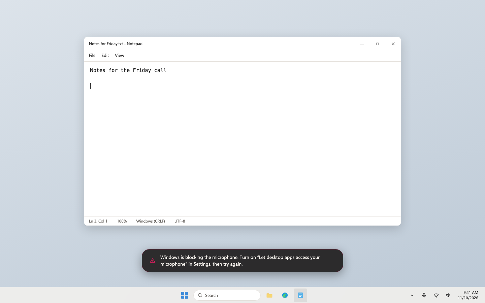

Loqui · Plan · Draft 1 · November 10, 2026
Loqui for Windows, step 2: dictation
On Windows, press the shortcut, speak, and clean text lands wherever your cursor is, turned into text on the PC itself.
What approving this does. A builder makes dictation work on Windows and proves it on GitHub's Windows computers on every change. It accepts my recommendations below unless you change one, including the default shortcut and how you'll try it yourself.
Your words
November 10, to Aiva"I need you to have it spin up a plan to create a Windows version of this product."
What changes
The heart of Loqui, on Windows, working the way it does on the Mac.
- One shortcut, two ways. Tap Ctrl+Shift+Space to start and tap again to stop, or hold it while you talk and let go. Recording starts the moment the key goes down, as on the Mac.
- The dictation bubble. The Mac's dark bubble with the magenta quote marks and live waveform sits at the bottom of the screen, and never takes the cursor away from where you're typing. The loqui icon by the clock turns magenta and pulses while it listens.
- Speech becomes text on the PC. An open speech model that runs on the PC's own processor, with punctuation and capitals. It understands English and 24 other European languages without being told which. Audio never leaves the PC.
- The same cleanup. The step 1 rules run on every dictation, including healing a sentence split by a pause, using the measured pause just as the Mac does.
- Pasted at the cursor. The text is pasted where you were typing and also left on the clipboard. If a window refuses pasted text (programs run as administrator do), the bubble says so and tells you to press Ctrl+V.
- Plain messages when something's wrong. If Windows is blocking the microphone, or there is no microphone, the bubble says what to do.
- Same safety stops as the Mac. It stops by itself after 2 minutes of silence, or 30 minutes in all.
- Records kept the Mac's way. Each dictation is saved to history and to the stats record in the same formats as the Mac, ready for steps 3 and 4 to show. Logs never contain what you said.
Who it's for: public. This step's build is still a test build on the GitHub check page. Until step 5 signs it, Windows will warn that it comes from an unknown publisher.
How it's tested without a Windows machine
Every change runs a real dictation on GitHub's Windows computers, end to end, with no person involved:
- A virtual sound cable gives the machine a microphone, and Windows' microphone switch for desktop apps is turned on.
- Notepad opens. A script presses Ctrl+Shift+Space the way a keyboard does.
- Windows' own voice speaks a sentence into the cable. loqui hears it, turns it into text and pastes it.
- The check reads Notepad's text back, compares it word for word, and saves a picture of the screen.
- While it runs, every network connection loqui opens is listed. The check fails if there is any.
The same check covers holding the key, a 60-second dictation, a dictionary word, Windows blocking the microphone, and the Arm version. This was proved in the experiment before planning: the picture below is from that run.
Screens, before and after
"Before" is the real Mac app, drawn from its own code. "After" is the Windows look drawn in a separate page and photographed, except the last picture, which is a real Windows screen from the experiment. Desktop app, so there is no phone size. Click any picture to see it big.
Listening



Pasted


Empty, loading, error and no permission


- Empty: if nothing was heard, the bubble simply goes away and nothing is pasted, as on the Mac.
- Loading: the speech model loads in the background when loqui starts (about 2.5 seconds). A press before then still records, and the text arrives once it has loaded. While the last words are turned into text, the bubble shows a small spinner.
- Error: no microphone at all gives "loqui can't find a microphone". A window that refuses pasted text gives the message above.
- No permission: Windows' microphone switch, above. Step 3's welcome window leads you to it.
Risk
Not risky. Why: it's a test build, nothing is sent anywhere, and it touches no one's existing data. It does watch the keyboard, as the Mac app does: it acts only on the one shortcut and records no other keys, and a check proves typed text never reaches any loqui file.
Decisions, with my recommendation
Approving this draft says yes to each recommendation unless you change one.
1. Which speech engine
- Recommended: NVIDIA's open Parakeet model (version 3), run by an open engine on the PC's processor.
- OpenAI's open Whisper model.
- Windows' own speech recognition.
Why: in the experiment it was word-perfect and eight to sixteen times faster than speaking, on ordinary processors. Whisper needs a graphics card to be as quick. Windows' own dictation sends audio to Microsoft, which breaks the promise.
2. Where the speech model comes from
- Recommended: inside the installer. The download is about 500 MB, and loqui never fetches anything but the update check.
- A small installer that downloads the model from GitHub on first start.
Why: a first-start download would add a second network request, so the README's "the only network request is the update check" would have to change. Updates stay small either way, because the model is kept between versions.
3. The default shortcut
- Recommended: Ctrl+Shift+Space, changeable in Settings (step 3).
- Ctrl+R, the direct match for the Mac's Cmd+R.
- F9 on its own.
Why: Ctrl+R reloads the page in every Windows browser, and many laptop keyboards need Fn for F9. Ctrl+Shift+Space is free in nearly every app.
4. Your text on the clipboard
- Recommended: leave it on the clipboard like the Mac, but keep it out of Windows' clipboard history and its sync to your Microsoft account.
- Leave it on the clipboard, history and sync included (Windows' default).
- Put back whatever was on the clipboard before.
Why: Windows can upload clipboard contents to Microsoft to share them with your other devices, which would carry dictated text off the PC.
5. How you try it yourself
- Recommended: Parallels Desktop on your MacBook (about $100 a year) running Windows 11 for Arm, which is free to install for testing. It uses the MacBook's microphone and keyboard.
- A second-hand Windows laptop, about $300 once.
- Only the pictures from the checks, until the launch step.
Why: you see it from this step on, with your own voice, without another machine on the desk; an agent can set it up over the MacBook connection once you've bought Parallels.
Not in this plan
- Changing the shortcut on screen, the dictionary and filler words on screen, history and the Recent menu, the welcome window (step 3). Until then they're set in the settings file.
- Stats (step 4); signing, installer and updates (step 5); the download page (step 6).
- Pasting into programs run as administrator. The text is on the clipboard instead.
- Using a graphics card for speech, and choosing between speech models.
Checkpoints
- Proved on Windows (GitHub, on your MacBook): open the pull request's checks. The Windows check shows pictures of Notepad holding the spoken sentence, for tap, hold and a 60-second dictation, and a line saying loqui opened no network connections. DICT-01 to DICT-07, PASTE-01, HUD-01, HUD-02, PRIV-01, PRIV-02, REC-01
- Your own voice (the Windows test machine from decision 5): install the test build, open Notepad, tap Ctrl+Shift+Space, say a few sentences with an "um" in them, tap again. The text lands cleaned up, with the filler gone. Hold the shortcut and talk, then let go. Turn the microphone switch off in Windows Settings and try again: the bubble says what to do. MIC-01, MIC-02, PASTE-02, PERF-01
For the agents
Build notes
- Checks to turn green: DICT-01 to 07, MIC-01, MIC-02, PASTE-01, PASTE-02, HUD-01, HUD-02, PRIV-01, PRIV-02, REC-01, PERF-01. Step 1's CLEAN checks keep passing; add shared cases only.
- Existing code to reuse: Mac
VoiceKeyService.swift(gesture machine states, 0.35 s hold threshold, exact modifier match on key-down, key-up matched by key code only while a gesture is in flight, autorepeat swallowed, reset on a lost key-up; watchdog 120 s silence and 30 min ceiling; 80 ms pause before paste; bubble timings 0.9 s and 1.8 s; log lines).VoiceTranscriber.swift(timed healing from segment gaps).DictationLog.swift,TranscriptionHistory.swift,CleanupAudit.swiftfor file formats, retention and the 2 MB audit log limit. The experiment code inplans/windows-dictation/experiment/: hook thread, SendInput, clipboard formats, Notepad readback, VB-CABLE and microphone consent setup. - Keyboard:
WH_KEYBOARD_LLon its own thread with a message loop; the callback only matches and posts to a channel, because Windows silently removes slow hooks. Accept injected key events (the checks rely on them) but tag loqui's own Ctrl+V with a marker indwExtraInfoand ignore it. Allowed shortcuts mirror the Mac: Ctrl or Alt with a key, or a bare F1 to F24. - Audio and speech: WASAPI shared mode on the default communications microphone, resampled to 16 kHz mono; rebuild on device change; log starvation over 5 s. sherpa-onnx C API (v2.0.1 shared build) with Parakeet TDT 0.6B v3 int8 and the Silero voice activity model, both pinned by SHA-256. Cut segments at pauses while recording so only the last segment is decoded after release; feed segment gaps to the timed heal. Load the model once at start on a background thread and keep it.
- Paste: clipboard set with Unicode text plus
CanIncludeInClipboardHistoryandCanUploadToCloudClipboardset to 0 (decision 4). Then SendInput Ctrl+V. If the foreground process runs at a higher integrity level than loqui, skip the paste and show the clipboard message. - Bubble: a second Tauri window: transparent, always on top, not in the taskbar, never activated, ignores the mouse; bottom centre of the monitor holding the foreground window. Uses step 1's tokens.
- Shared interfaces and owners:
%LOCALAPPDATA%\Loqui\settings.json(shortcut, history retention days with the Mac's meanings: -1 off, 0 forever, N days) is created here; step 3 adds fields and the screens.history.jsonlanddictation-log.jsonlkeep the Mac's JSON shapes; steps 3 and 4 read them. The core crate owns all file reading and writing; screens never touch files directly. - Model files: the test build packs the model from the sherpa-onnx release, checked against its SHA-256 in CI. Installed under the app's folder in
models\; step 5's installer keeps it across updates. The app never downloads anything. - Checks:
windows/e2e/drives the run described above onwindows-latestwith VB-CABLE (pinned by SHA-256) and the microphone consent keys. The Arm runner has no proven virtual cable driver, so its run uses a test-only file audio source compiled only into test builds (a Cargo feature), never into release builds; CI fails if a release build contains it. Network watch: list TCP connections owned by loqui and its web view processes for the whole run; any non-loopback address fails PRIV-01. - Data and outside services: none at run time. CI downloads the engine, model and VB-CABLE, each pinned by SHA-256.
- Can't be undone: nothing.
- Staging and rollback: the test build is the check run's attachment; going back means using an earlier run's build.
- Experiments (2026-11-10): engine run: model 640 MB on disk (487 MB download), engine 67 MB; 43.6 s of speech in 5.2 s on a 2-core AMD EPYC runner and 2.8 s on a 4-core Arm Cobalt 100; model load about 2.5 s; German, Spanish and French samples exact. Desktop run: the hook saw and swallowed an injected Ctrl+Shift+Space; first try failed with "access denied" because Windows' desktop microphone switch was off, then capture through VB-CABLE gave an exact transcript in 3.2 s including model load, and Ctrl+V into Notepad matched exactly. Web view run: a bare Tauri 2 window ran 60 s with no internet connections and no new name lookups on the machine. Not measured yet: memory use (PERF-01 records it).